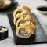

SUSHI EMPANIZADO DE CAMARÓN Y AGUACATE
Preparado: 40 mins
Cocinado: 8 mins
Dificultad: Baja

Esta versión de sushi casero es tipo california, pues se prepara con camarón con un toque extra especial, vegetales y un empanizado crujiente. Además, este sushi se acompaña con un aderezo de Mayonesa McCormick® Light.
Revisado por el Equipo Editorial de Kiwilimón
Ingredientes
- 2 tazas de camarón, limpio, sin cola
- 1/4 tazas de jugo de limón
- suficiente de sal
- suficiente de pimienta
- 1/2 tazas de mayonesa McCormick® Light
- 1 cucharada de aceite vegetal
- 2 algas nori
- 2 tazas de arroz para sushi , previamente cocido
- 1/2 tazas de queso crema, en tiritas
- 1/2 tazas de aguacate, en tiritas
- 1/2 tazas de zanahoria, en bastones delgados
- 1/2 tazas de mango manila, en bastones delgados
- 2 huevos, batido
- 2 tazas de panko
- suficiente de aceite vegetal, para fritura profunda
- 1/2 tazas de mayonesa McCormick® Light
- 1 cucharadita de wasabi
- 1 cucharada de jugo de limón
- suficiente de sal
- suficiente de ajonjolí negro, para decorar
- suficiente de salsa de soya
Preparación
- Mezcla cuidadosamente el camarón con jugo de limón, sal, pimienta y Mayonesa McCormick Light® en un tazón, luego deja reposar por 10 minutos.
- Calienta una sartén a temperatura media, agrega un poco de aceite vegetal y cocina los camarones marinados por 5 minutos, después retira y deja enfriar. Reserva.
- Coloca una hoja de alga nori sobre un tapete de bambú y extiende una taza de arroz para sushi cocido, aproximadamente. Posteriormente, voltea la hoja, de manera que el alga quede por dentro.
- Coloca la zanahoria, el mango, el aguacate, las tiras de queso crema y los camarones que cocinaste sobre el alga. Si lo consideras necesario, córtalos para que se puedan acomodar.
- Enrolla el sushi y prepara más rollos con el resto de los ingredientes.
- Una vez que tengas listos los rollos, empanízalos. Primero pásalos por huevo batido y después por panko.
- Congela los rollos por 30 minutos, deben estar muy firmes.
- Mientras los rollos se congelan, calienta abundante aceite en una olla profunda a temperatura media.
- Fríe los rollos de sushi empanizado por 3 minutos, deben tomar un color dorado medio. Saca, retira el exceso de grasa y deja enfriar por 5 minutos.
- Mezcla la Mayonesa McCormick Light®, el wasabi, el jugo de limón y un poco de sal para preparar el aderezo, luego decora con ajonjolí negro.
- Corta los rollos de sushi empanizado de camarón y aguacate, agrega un poco de aderezo en la parte superior y baña con salsa de soya.
Presentación
Sirve los rollos cortados, acompaña con el aderezo y decora con ajonjolí negro.
Tips
Puedes congelar el sushi dos veces, antes y después de empanizar. Si consideras necesario empanizarlo una vez más antes de freír, lo puedes hacer para que la capa quede más crujiente.
Autor
Liam Ibrahim Pérez Sulvarán